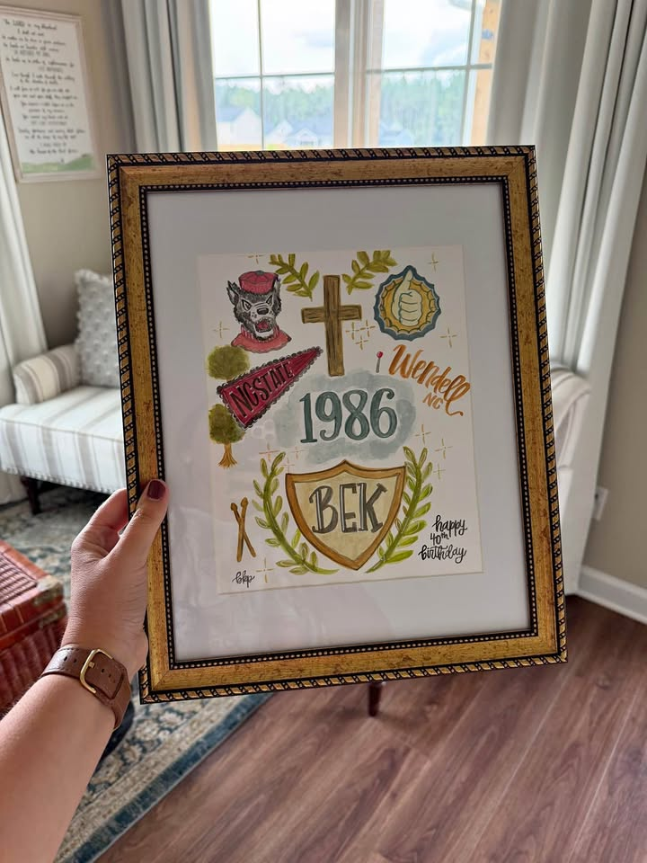
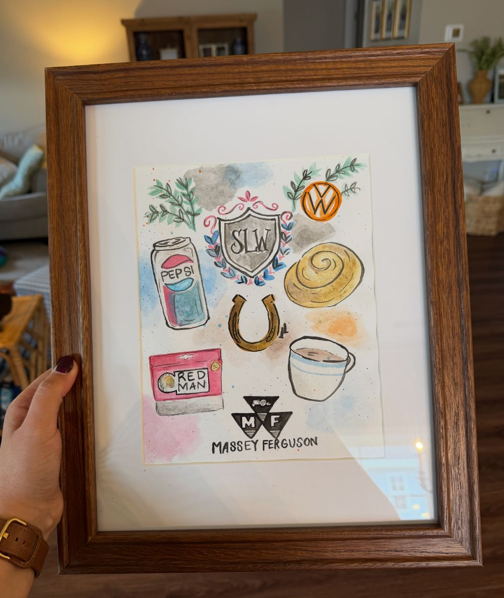

Milestone birthday watercolors
30th, 40th, 50th and beyond. The birth year, hometown, school and passions of the person, gathered on one sheet.
Custom watercolor commissions
A personalized watercolor built from the details you send: names, a year, a hometown, a school, a faith, the small things only family would recognize.
What a custom watercolor can be
A custom watercolor from Chintz Creative is an original painting made to order by Bailey Powers. You send the details of a person, a place or an occasion, and they are painted and hand lettered into a single piece, ready to frame and give.
30th, 40th, 50th and beyond. The birth year, hometown, school and passions of the person, gathered on one sheet.
Initials set in a painted crest or laurel wreath, with a family name, a date or a motto lettered by hand.
The town, the college pennant, the mascot, the team colors. A gift for graduates, alumni and anyone who left home.
The date, the venue, the florals and the couple's initials, painted as a gift for the couple or from them.
A name, a birth date and a few painted details for a nursery wall or a new parent gift.
A painting of the things someone loved, made to keep their story in one place.

Example
This 40th birthday watercolor started as a list: the initials BEK, the year 1986, Wendell NC, NC State, a cross, a thumbs up, a pair of drumsticks. Each became a small painting, arranged around a lettered crest and framed in gold.



Before you start
The intake form walks through each of these. Rough answers are fine.
Questions
Fill out the intake form at chintzcreative.com/commission with the occasion, who it is for, the details to include, size, budget and deadline. Bailey replies with a quote and timeline before any painting starts.
Pieces start on letter size paper (8.5 × 11 in), which frames in a standard 11 × 14 frame with a mat. Larger sizes are 11 × 14, 16 × 20 and 18 × 24 inches. Each size holds a set number of items, and the keepsake board moves your piece up a size when it fills.
Yes. Reference photos of a place, an object, a mascot or a keepsake help. You can attach them in the intake form.
Framing is optional. Choose a wood, gold or black frame with a white mat, from $25 for letter size up to $75 for 18 × 24. Pieces can also come unframed, sized to fit a standard frame.
Custom watercolors start at $50 for a letter size (8.5 × 11 in) piece with five items, such as a year, a hometown, a mascot or a favorite flower. Each extra item is $5, up to two more. Larger pieces are $100 for 11 × 14, $150 for 16 × 20 and $200 for 18 × 24. Framing in wood, gold or black with a white mat is $25 to $75 depending on size. The keepsake board shows an estimate as you lay out your piece, and Bailey confirms the price before anything is charged.
As early as you can, especially for birthdays, holidays and wedding season. Put your date on the form and Bailey will confirm whether it can be met.
A custom watercolor that gathers the person's life into one framed piece: their initials in a crest, the year they were born, their hometown, their school or team, their faith and the things they love. It is one of a kind, made only for them.
Pieces can be picked up or shipped. Choose pickup or shipping on the intake form and include your city and state.
Also from the studio: Hand lettering · Birthday banners
Commission a piece
The intake form takes about five minutes. It asks for everything Bailey needs to quote your piece, so there is no back and forth before she can start.